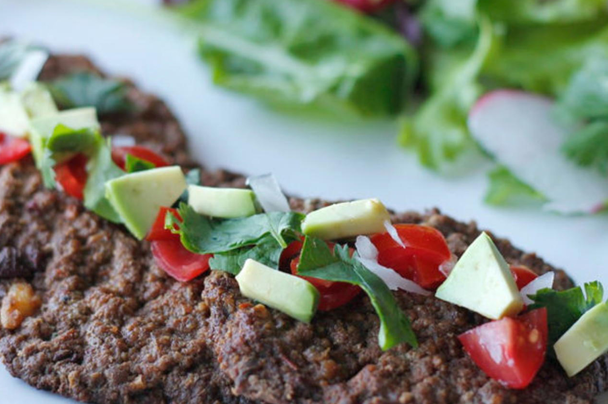

PACHOLAS GUANAJUATENSES

UN PLATO DE GRAN TRADICIÓN DE LA COCINA RURAL, DEBIDO A QUE SU ELABORACIÓN SE LLEVA A CABO EN EL METATE, UN UTENSILIO PREHISPÁNICO HECHO DE PIEDRA DONDE SE MOLÍA EL MAÍZ, GRANOS, CHILES Y OTROS INGREDIENTES.
LA PACHOLAS SE ELABORAN CON CARNE MOLIDA, CHILE Y ESPECIAS, UNA VEZ MEZCLADOS LOS INGREDIENTES SE PASAN POR EL METATE Y SE LES DA LA FORMA DE UNA ESPECIE DE TORTILLA ALARGADA, SE FRÍE EN ACEITE Y AL SERVIR SE ACOMPAÑA CON PAPAS FRITAS Y A DISFRUTAR DE ESTE DELICIOSO PLATO.